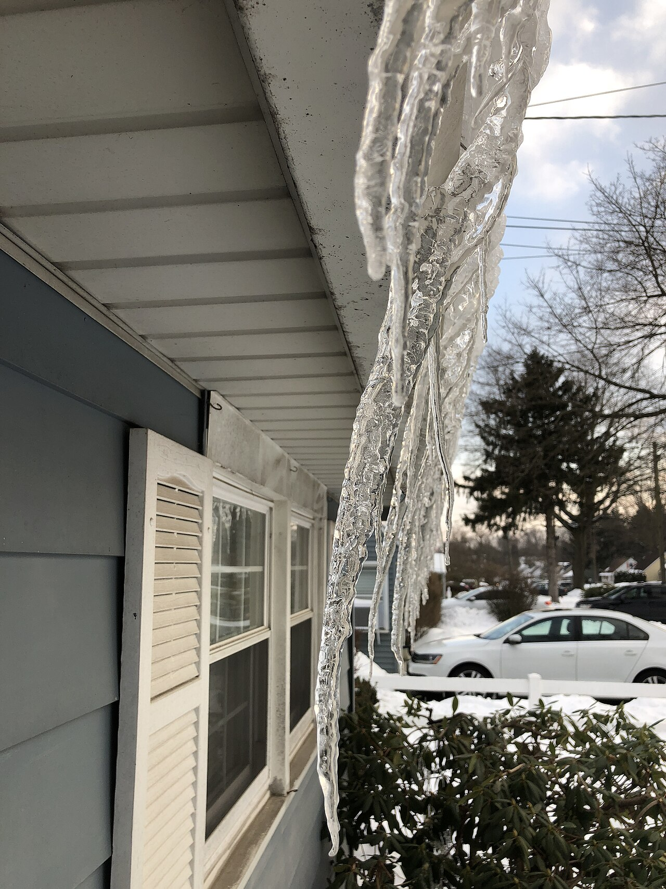

Foundation Damage After a Storm: How to Check Your Home Safely
Yes, heavy rain and storms can damage a foundation, and the damage is often underground where you cannot see it: moving water washes soil out from under slabs, saturated ground loses strength and lets footings settle, and floodwater leaves silt and moisture loads that keep working for weeks. A post-storm foundation check is how you catch that while it is still a drainage or soil problem rather than a structural one.
The exposure is seasonal in the Gulf markets. Atlantic hurricane season runs June 1 through November 30, and Baton Rouge takes tropical rainfall and wind from Gulf landfalls, with Mississippi River and Amite River flooding a recurring concern for its low-lying east side. Gulfport sits directly on the Mississippi Sound: Hurricane Katrina made landfall on this coast on August 29, 2005, and devastated its beachfront. New Orleans flooded across roughly 80 percent of the city the same day after levee and floodwall failures, and much of it sits below sea level on ground that is still subsiding. In all three markets, checking after a storm is not anxiety. It is the routine the geography demands.
Do this check visually, from outside and from safe interior spaces, as soon as water recedes and conditions are safe. You are documenting, not repairing, and the checklist below is ordered so the most telling signs come first.
Request a free inspection
First: Safety Rules Before You Check Anything
Keep this check visual and non-invasive, and respect three stop conditions. If you smell gas, stop, leave the house, and call your gas utility or 911 from outside. If water is standing anywhere near electrical panels, outlets, or appliances, treat it as an electrical hazard and stay out until the utility or an electrician clears it. If a wall, floor, or ceiling looks at risk of collapse, do not enter that space at all. No photograph is worth any of those risks, and everything in this guide can wait a day.
Work in daylight, with a flashlight rather than candles, and do not move debris that is load-bearing or wedged against a wall. Avoid entering flooded crawl spaces entirely; they combine electrical, contamination, and confined-space hazards. Once those three hazards are ruled out, the rest of the check is walking, looking, tapping, and photographing, which is all a homeowner needs to do before professionals get involved.
Should I call my insurer, an engineer, or a foundation company first?
Photograph and measure first, then call your insurer to open the conversation if a covered event is plausible, and get an independent structural engineer for the diagnosis. The order matters because repair companies sell repairs: their quote is not evidence. The engineer's report and your dated photos are the documents that support an insurance claim and let you compare any repair quotes against a defined scope of damage.
Can a house settle weeks after the storm is over?
Yes, and it is a common pattern. Saturated soil loses bearing strength during a storm, then consolidates and shrinks as it dries over the following weeks, so a footing that held during the flood can drop afterward. That is why this guide ends with a second check about a month later. New door sticking or fresh cracks appearing weeks after a storm deserve the same attention as immediate damage.
The Post-Storm Checklist, in Order
Work the list in order: safety, then soil, then structure, then documentation. The soil steps come first because storm water foundation problems usually begin there. Look for where water moved earth: erosion channels running toward the house, soil scoured from the edge of a slab, sand or silt fanned out where floodwater drained away. In Gulfport's sandy soil, and along Baton Rouge's low east side near the Amite River, washout can hollow out support under a slab while the house above looks untouched.
The slab hollow sound test on the list is simple and genuinely useful: a broom handle tapped across a concrete floor sounds solid over supported concrete and drummy over a void. Mark what sounds hollow. Combined with your dated photographs, that map is the core evidence you hand to an engineer or insurer, and it is what separates a defined washout repair from an open-ended one.
- Confirm the three safety hazards are absent (gas smell, water near electrics, collapse risk) before entering any space.
- Walk the perimeter and photograph erosion: gullies, washed-out soil at slab edges, exposed footings, and any place soil has dropped or disappeared.
- Look specifically for soil washed out from under the slab: gaps at the slab edge, voids you can see into, sand or silt deposited where water exited.
- Check doors and windows inside: note any that newly stick, swing, or show fresh diagonal cracks above the frame.
- Tap slab and garage floors with a broom handle and listen: a hollow sound suggests a void underneath; mark hollow spots with tape and photograph them.
- Read walls for new cracks, especially horizontal, offset, or wider than anything you have marked before; measure and date each one.
- Note water evidence: silt lines, debris marks, efflorescence, and how high moisture reached, inside and out.
- Photograph everything with the date visible in your camera record, including undamaged sides, so the full condition of the house is on record.
- Repeat the door, floor, and crack checks about a month later to catch delayed settlement as soil dries.
Can heavy rain really damage a foundation?
Yes. Heavy rain damages foundations mainly through soil, not through the concrete itself: fast water scours soil from under slabs and footings, and fully saturated soil loses bearing strength so sections settle unevenly. One storm rarely cracks a sound foundation outright, but it can expose weak drainage, wash out a void, or start settlement that shows up as cracks and sticking doors in the weeks after.
How can I tell if soil washed out from under my slab?
Look along the slab edges for gaps, soil dropped below its old line against the concrete, or open voids you can see or probe gently with a stick from outside. Inside, tap the floor for hollow sounds and watch for new slopes or cracks radiating from the washed side. Silt or sand deposited on the exit side of the house shows where water carried soil as it left.
Storm Damage or Old Damage? Reading What You Found
The honest answer is that some of it will be both. Storms accelerate existing weaknesses: a crack that was hairline opens, a marginal footing settles, drainage that was barely adequate fails. What distinguishes storm damage in practice is timing and change. Cracks after a storm that were not there in your last photographs, settlement that appeared during or just after the event, and washout patterns that match the storm's water are storm-linked. Long-standing cracks with old paint inside them and years of stable marks are not, and presenting them as storm damage helps nobody, including you.
Documentation is the bridge between the two. Insurers and engineers both work from change over time, so your dated photos, crack measurements, and hollow-spot map carry more weight than a verbal description. In New Orleans especially, where subsidence is an ongoing background condition, separating the slow citywide sinking from a specific storm's contribution is an engineer's measurement job, not a guess. Get the evaluation, typically $350 to $600, before signing anything.
Are cracks after a storm serious?
New cracks after a storm deserve evaluation when they are wide, horizontal, offset, leaking, or paired with newly sticking doors or a sloping floor, because together those signs describe active movement. A lone hairline drywall crack after a storm is usually the house flexing and can be marked and monitored. The tiebreaker is change: a crack that keeps growing after the soil dries is moving, storm or not.
What does storm surge do to a foundation?
Storm surge damages foundations by moving water and soil, not just by getting things wet. Surge scours sand and soil from under slabs and around piers, undermines shallow footings, and can shift raised homes on their supports; then receding water carries more soil with it. On the Mississippi Sound coast, that scouring is why homes that never flooded inside still need a soil and support check after a surge event.
Who to Call, and in What Order
For a foundation inspection after a hurricane or major storm, the order that protects you is: document, then insurer, then independent engineer, then repair companies for quotes on a defined scope. The engineer's elevation measurements tell you whether the house actually moved, how much, and where, which converts a frightening week into a factual one. If the engineer finds no structural movement, your repair list is drainage and soil work, which is cheaper and often partly DIY. If movement is real, you shop for it properly.
On repair pricing, insist on itemized quotes tied to the documented damage. Published pricing for underpinning runs $1,000 to $2,500 per pier installed, with typical structural repairs at $4,000 to $12,000, and void filling or slab support work priced by the area affected. A quote produced without measurements, or one that grows when you ask for it in writing, is a reason to get another. FoundationMatch is a matching service, not a contractor: after an engineer defines the problem, we can connect you with local companies in Baton Rouge, Gulfport, or New Orleans to quote it.
How do I get foundation quotes that actually agree with each other?
Agreement between quotes comes from giving every company the same facts. Hand each one your engineer's report, your dated photos, and your measurements, and ask for an itemized quote against that scope: piers counted and located, soil work described, warranty in writing. Companies quoting the same defined job land close together. Companies quoting from a sales walk-through are quoting different imagined jobs, which is why their numbers scatter.
Frequently asked questions
How soon after a storm should I check my foundation?
Check in two passes. Do the visual walk-around within the first day or two after the water recedes, while washout, pooling lines, and debris marks still show exactly where water went. Then repeat the door, floor, and crack checks about a month later, because saturated soil settles as it dries and post-storm settlement often declares itself on the second look, not the first.
What exactly should a post-hurricane foundation inspection cover?
Walls get checked for new or widened cracks, any fresh lean or bulge, and water staining that shows how high moisture reached. Floors and slabs get checked for hollow sounds, new slopes, and separation at the edges. Doors and windows get tested, because sudden sticking after a storm is structural language. Photograph everything with dates; that record drives insurance conversations and any later repair quotes.
Does homeowners insurance cover storm foundation damage?
Generally, standard policies exclude gradual settlement and earth movement, and cover sudden, accidental events. Storm surge or floodwater that physically undermines a slab during a named storm is the kind of sudden event worth documenting and discussing with your insurer, while slow sinking is not. Flood damage usually sits in separate flood insurance. Read your policy, and let dated photos, not assumptions, carry the claim conversation.
How much does it cost to repair a foundation after soil washout?
A washed-out void is usually repaired by filling and stabilizing the soil under the slab, sometimes combined with slabjacking to re-support the concrete, and piers at $1,000 to $2,500 each installed where a footing lost support. An independent engineer evaluation, about $350 to $600, should size the job first. Get itemized quotes for defined work; washout repair priced sight unseen is a red flag.
Can storm surge damage a foundation without flooding the house?
Yes, and on the Gulf Coast it is common. Gulfport's sandy soils and high water table mean surge and floodwater can move soil out from under slabs and shallow footings even when the structure above looks untouched. Raised cottages near the beach face pier scour, while inland ranch slabs face washout at their edges. Any home that took water should be checked, dry walls or not.
How does FoundationMatch help after storm damage?
FoundationMatch is a matching service, not a contractor. We connect homeowners in Baton Rouge, Gulfport, and New Orleans with local foundation companies for itemized quotes, and we recommend an independent engineer first whenever the damage pattern is unclear. Bring your dated post-storm photos and measurements to every quote appointment; they keep the conversation on the damage you documented rather than the damage someone wants to sell.
Related guides
Request a free foundation inspection
Tell us where you are and what you are seeing — a local specialist will call you back to schedule it.
Prefer to talk first? [Call-tracking phone number to be added before launch]